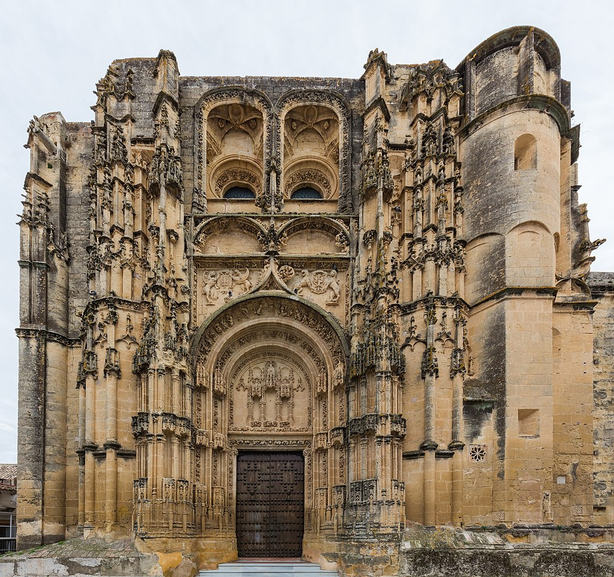

Asentada sobre una espectacular peña cortada, Arcos de la Frontera es una pintoresca villa gaditana plagada de rincones que rememoran su herencia árabe. Su casco antiguo está declarado Bien de Interés Cultural.
Asentada sobre una espectacular peña cortada, Arcos de la Frontera es una pintoresca villa gaditana plagada de rincones que rememoran su herencia árabe. Su casco antiguo está declarado Bien de Interés Cultural.
El casco histórico se extiende entre la Cuesta de Belén y la Puerta Matrona, único acceso que pervive de la antigua muralla árabe. En pleno centro se localiza la plaza del Cabildo, rodeada de edificios notables.
Entre los siglos XV y XVIII se instalaron numerosas órdenes religiosas, reflejado en templos como la Basílica de Santa María de la Asunción, joya del gótico plateresco y Bien de Interés Cultural.